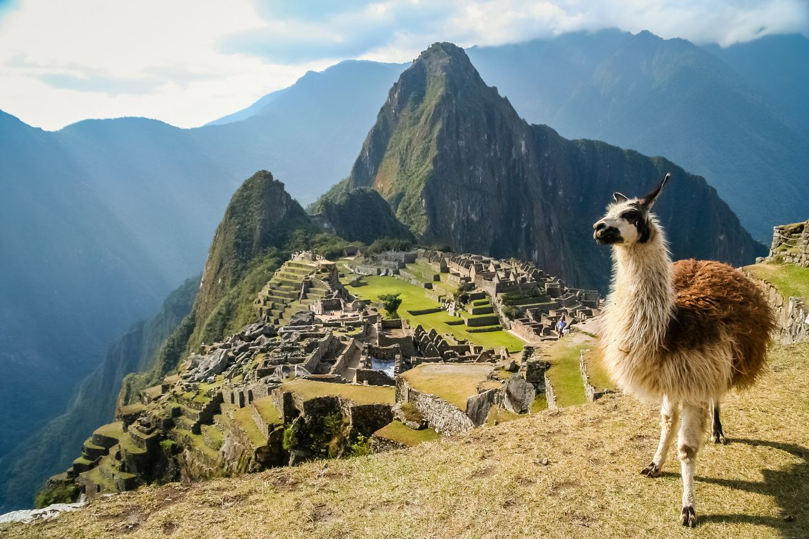

Hello, fellow adventurers! Isa here, and I'm thrilled to share my recent expedition to the awe-inspiring Machu Picchu in Peru. Join me on this journey as we unravel the secrets of this ancient Incan wonder.
Arrival in Cusco
My adventure commenced in the charming city of Cusco, Peru's historical heart. From Cusco, I embarked on a scenic train ride through the Andes, marveling at the breathtaking landscapes, until I reached Aguas Calientes, the gateway to Machu Picchu.

Lost City of the Incas
Machu Picchu, often referred to as the "Lost City of the Incas," left me in absolute awe. As I stood among the ancient ruins, I couldn't help but admire the remarkable engineering and architectural prowess of the Incan civilization. The panoramic views of the surrounding mountains were simply breathtaking.
The Inca Trail
My journey to Machu Picchu was not complete without hiking a portion of the Inca Trail. The rugged terrain and lush landscapes offered a glimpse into the challenges faced by the ancient Incas who built this extraordinary citadel high in the Andes.
Sun Gate Sunrise
One of the most memorable moments of my visit was watching the sunrise from the Sun Gate, Intipunku. The first rays of sunlight illuminated Machu Picchu, creating a mystical atmosphere. It was a sight that will forever be etched in my memory.

Culture and History
Exploring Cusco and the Sacred Valley allowed me to delve deeper into Incan culture and history. I visited the impressive Sacsayhuaman fortress, the Pisac ruins, and the vibrant Pisac market, where I indulged in local handicrafts.
City Data
| Category | Fact |
|---|---|
| Location | Machu Picchu, Peru |
| Altitude | Approximately 2,430 meters (7,970 feet) above sea level |
| Discovery | Revealed to the world by Hiram Bingham in 1911 |
| Official Language | Spanish and Quechua |
| Currency | Peruvian Nuevo Sol (PEN) |
| Climate | Varies from subtropical to mountainous, with a rainy season from November to April |